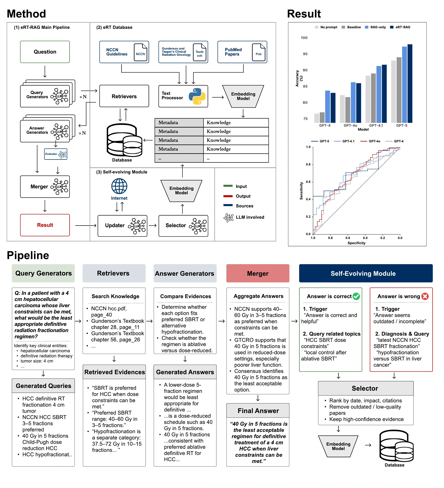
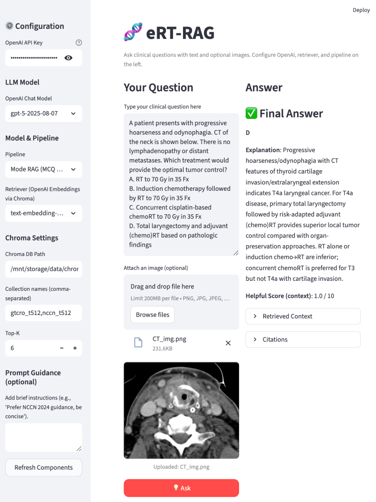

Key Points
Question: Does use of a self-evolving multi-agent Retrieval-Augmented Generation (RAG) system, eRT-RAG, significantly increase performance and reliability of large language models (LLMs) when answering textual and multimodal questions in radiation oncology?
Findings: In this cross-sectional study on 4 generations of ChatGPT LLMs, introduction of eRT-RAG uniformly improved the accuracy of question responses, with smaller and older models realizing the greatest gains. RAG performance on debate-type clinical questions, where evidence is heterogeneous and consensus unsettled, was rated highly by 4 physicians.
Meaning: This study demonstrates that retrieval-augmented and self-evolving LLMs can achieve significant performance gains in radiation oncology reasoning tasks.
Abstract
Importance: Large language models (LLMs) have potential as force multipliers for physicians, improving efficiency and quality of clinical decision making. However, critical weaknesses in foundation models, including hallucination and outdating training data, block adoption, particularly in specialties like radiation oncology.
Objective: To implement and assess the performance impact of a self-evolving multi-agent Retrieval-Augmented Generation (RAG) pipeline, eRT-RAG, on LLMs when answering clinical questions in radiation oncology.
Design: eRT-RAG was developed between March and October 2025 to enhance LLM performance when answering questions in radiation oncology while providing transparent source citations and reliability scores. Experiment 1 evaluated the accuracy of 4 generations of LLMs (GPT-4, GPT-4o, GPT-4.1, GPT-5), with and without RAG enhancement, when answering multiple-choice questions from 2021 ACR Radiation Oncology In-Training Examination (TXIT). In experiment 2, models were prompted to answer open-ended, debate-style questions on clinically relevant gray-zone scenarios that require evidence synthesis and balanced reasoning rather than single-answer recall. Responses were rated by 3 expert and 1 resident radiation oncologists.
Setting: Washington University School of Medicine
Participants: 4 LLMs
Exposure: Use of eRT-RAG pipeline
Main Outcomes and Measures: Experiment 1: accuracy of model answers relative to 2021 TXIT answer key; Experiment 2: expert ratings of response accuracy and completeness.
Results: Experiment 1: eRT-RAG outperformed corresponding baseline models across all four generations. Accuracy improved from 77.0% to 83.0% for GPT-4, from 81.7% to 86.0% for GPT-4o, from 89.0% to 91.7% for GPT-4.1, and from 94.0% to 98.0% for GPT-5. Experiment 2: the odds of obtaining a higher expert rating for eRT-RAG than for the baseline model were 8.2 times greater for accuracy and 7.5 times for completeness.
Conclusions and Relevance: This study demonstrates that retrieval-augmented and self-evolving LLMs can achieve expert-level performance in radiation oncology question-answering tasks. eRT-RAG not only corrected factual and retrieval-related errors in all classes of LLM, but also reconciled complex, debate-type clinical questions through multi-source synthesis. Future work will focus on local deployment to ensure data privacy, further optimization of retrieval efficiency, and integration into clinical workflow environments.
Introduction
Large language models (LLMs) such as GPT-4 and GPT-5 show potential in clinical medicine, producing human-like text for examinations, patient communication, and scientific writing1,2. However, general-purpose LLMs face critical challenges in healthcare, notably hallucinations – plausible but false statements that can lead to unsafe or misleading advice3,4.
Radiation oncology presents unique demands, requiring a precise understanding of dose constraints, imaging, and safety protocols rarely captured in general corpora. Studies show that models like GPT-3.5 and GPT-4 perform far below expert level on medical physics assessments5. Prior evaluations on the 2021 ACR Radiation Oncology In-Training (TXIT) examination showed GPT-4-turbo achieved 74% accuracy6, demonstrating that while LLMs capture core radiotherapy knowledge, domain adaptation is essential for clinical deployment.
Retrieval-Augmented Generation (RAG) mitigates these gaps by grounding model responses in domain-specific references during inference3,7. This approach reduces hallucinations and enhances factual accuracy8 without costly retraining, as new knowledge is incorporated dynamically. Grandinetti and McBeth (2023) proposed the Adaptable Retrieval-Based Chain-of-Thought (ARCoT) framework for medical physics9, improving scores by up to 68% by integrating a GPT-4-class LLM with a curated repository of AAPM reports and IAEA texts. Recent results have reported accuracies of up to 85.6% for RAG-augmented LLMs when answering questions from the 2021 TXIT examination10.
However, retrieval-augmented systems face a key limitation: medical knowledge evolves continuously, and static databases can quickly become outdated. To address this, we have developed a self-evolving agentic AI framework for radiation oncology question-answering, eRT-RAG, that autonomously expands and refreshes its evidence base using user feedback and automated PubMed retrieval.
We now measure the improvement in performance between baseline LLMs, a static RAG framework and eRT-RAG across two problem domains: answering board-style exam questions and responding to open-ended clinical questions on topics where evidence is heterogeneous, partially contradictory, and expert consensus remains unsettled.
Methods
Overview of the eRT-RAG Pipeline
Figure 1A illustrates the eRT-RAG architecture, which integrates the language-understanding capacity of LLMs with a structured retrieval engine11 and a self-updating knowledge base to support radiation oncology question-answering tasks. The system produces linguistically coherent answers transparently grounded in authoritative sources.
The pipeline consists of four main components: query generation, knowledge retrieval and embedding, answer generation, and evidence aggregation with a self-evolving module. An example application is shown in Figure 1C.
Query Generation. Multiple agents reformulate the user question into semantically rich retrieval prompts emphasizing key clinical entities such as diseases, treatments, and outcomes. This multi-agent design increases search diversity and reduces bias in information retrieval.
Knowledge Retrieval and Embedding. The retriever accesses a curated database built from authoritative sources, including NCCN Guidelines12, Gunderson and Tepper’s Clinical Radiation Oncology13, and PubMed papers. Retrieved passages are parsed, indexed and encoded into a vector space for semantic retrieval, then ranked according to their relevance to generated queries. The construction of the database is shown in Figure 1B.
Answer Generation and Aggregation. Each agent synthesizes an answer based on retrieved evidence, producing both a concise explanation and, when applicable, a concrete decision output. An Evaluator assesses how effectively the retrieved context supports each generated answer, producing an evidence support score. The Merger aggregates all responses through weighted voting based on these scores, yielding a final answer supported by cited references for full traceability. An overall confidence score is provided to reflect the reliability of the result.
Self-Evolving Module. To maintain alignment with evolving clinical evidence, the Updater is activated by user feedback after answer generation. Positive feedback triggers related-topic expansion to improve future coverage, whereas negative feedback indicating that an answer is unsatisfactory initiates targeted PubMed retrieval. The Selector ranks candidate papers before selected texts are incorporated into the database. This feedback-driven loop enables continuous refinement of the knowledge base.
See Online Methods for details of implementation, parameter settings, and prompt designs.
Experiment 1: Board-style examination questions
Question Source. The benchmark chosen to assess the impact of augmentation with the eRT-RAG pipeline when answering board-style examination questions in radiation oncology was the 2021 American College of Radiology (ACR) Radiation Oncology In-Training Examination (TXIT), a standardized national examination assessing residents across radiobiology, physics, clinical oncology, and treatment planning. This exam consists of 300 multiple choice questions, of which 286 are purely textual and 14 combine text and visual elements (e.g., treatment planning figures, imaging findings) into multimodal questions.
Model Evaluation. In order to assess the relative impact of RAG-augmentation on LLMs of varying complexity, we compared the performance of eRT-RAG, static RAG without self-evolving, non-RAG baselines, and non-RAG models without engineered prompts (see eTable 1 for prompt templates) across four LLM generations: GPT-4 (2023), GPT-4o (2024), GPT-4.1 (2025), and GPT-5 (2025). All exam questions were input to each model by a single researcher (TL) between August and December 2025. Questions were submitted to baseline models via Python API and to RAG-augmented models via the eRT-RAG graphical user interface (eFigure 1). For multimodal questions, both the question text and accompanying images were submitted. Answers were marked as correct if they matched the 2021 TXIT answer key and incorrect otherwise. Statistical analysis was conducted in R v4.5.1. Model performance was compared using 2-sided exact McNemar’s test with 5% significance threshold, and odds ratios for incorrect responses were calculated14.
Additional Analyses. To quantify the performance impact of individual knowledge sources, we performed an ablation study on static RAG models using knowledgebases constructed from combinations of three evidence sources: Gunderson & Tepper’s Clinical Radiation Oncology, NCCN Guidelines, and a randomly sampled set of 1,000 PubMed articles retrieved using the keyword “Radiation Oncology.” Furthermore, for each answer generated by eRT-RAG, the system recorded a confidence score on a 1–10 scale to rate its reliability. These scores were compared between correct and incorrect responses and assessed for the discriminative ability.
Experiment 2: Debate-style clinical questions
Question Source. To assess the influence of RAG on higher-order reasoning and clinical judgment, a set of 8 expert-level case debate questions was composed by an expert radiation oncologist (MRW) covering multiple disease sites. Each debate question represents a clinically-relevant gray-zone scenario (e.g., treatment de-escalation, trial-driven paradigm shifts) that requires evidence synthesis and balanced reasoning rather than single-answer recall.
Models Tested. Each question was posed to GPT-5 with and without eRT-RAG augmentation. Models were prompted to generate structured, evidence-based responses addressing clinical trade-offs, supporting evidence, and areas of uncertainty for each scenario.
Evaluation. Model responses to each prompt were independently reviewed by a panel of raters consisting of 3 expert radiation oncologists (JAC, SM, MRW) and 1 resident (ACW). Raters were blinded to the source of responses and asked to rate each on a 1 to 5 Likert scale for accuracy and completeness (see eTable 2 for full definition of each metric). Inter-rater reliability within the panel was assessed using Kendall’s W, and effect of eRT-RAG augmentation on response quality scores was quantified by fitting cumulative link mixed models (CLMM) for accuracy ratings and completeness ratings with model type (Baseline vs. eRT-RAG) as the fixed effect and question ID and rater ID as random effects15. Odds ratios and 95% CIs for improvements in accuracy and completeness were calculated.
Results
Experiment 1: Board-style examination questions
Improvement of eRT-RAG. Figure 2A shows the accuracy of four generations of LLMs (GPT-4, GPT-4o, GPT-4.1, GPT-5) under four paradigms: no prompt engineering, baseline, static RAG, and eRT-RAG. Accuracy was higher under eRT-RAG for all models compared to baseline: accuracy improved from 77.0% to 83.0% for GPT-4 (odds ratio [OR], 0.1; 95% CI, 0.011-0.412; P = 1.2e-4), 81.7% to 86.0% for GPT-4o (OR, 0.745; 95% CI, 0.476-1.157; P = .20), 89.0% to 91.7% for GPT-4.1 (OR, 0.758; 95% CI, 0.432-1.313; P = .36), and 94.0% to 98.0% for GPT-5 (OR, 0.25; 95% CI, 0.061-0.775; P = .01). Compared with the static RAG, eRT-RAG demonstrated superior performance in more advanced models, with accuracy increasing from 91.3% to 91.7% for GPT-4.1 and from 97.3% to 98.0% for GPT-5, but yielded slightly lower results in the older GPT-4 (83.7% vs. 83.0%) and GPT-4o (86.3% vs. 86.0%) models. A detailed analysis of error types is found in Online Results and eTable 3.
Ablation Study: Impact of Individual Knowledge Sources. We performed an ablation analysis within the static RAG to evaluate how different knowledgebase combinations affect model performance (Figure 2B). Each panel represents one model, and the bars compare accuracy from different knowledgebase configurations, including two high-quality curated sources (Gunderson & Tepper’s textbook and NCCN Guidelines) with and without a set of 1,000 randomly sampled PubMed radiation oncology articles. This enabled comparison among combinations of sources and the no-RAG baseline. Across GPT-5, GPT-4.1, and GPT-4o, using only the curated sources produced the highest accuracy: GPT-5 achieved the best overall accuracy of 97.33%, followed by GPT-4.1 (91.33%), GPT-4o (86.33%), and GPT-4 (83.00%). When the random PubMed expansion was added, accuracy declined slightly in the higher-capacity models (e.g., from 97.33% to 96.67% in GPT-5 and 91.33% to 91.00% in GPT-4.1), suggesting that simply broadening the corpus with less targeted literature does not necessarily improve retrieval quality. Conversely, for GPT-4, this random expansion yielded a marginal increase (83.00% to 83.67%).
Error Analysis and Confidence-Based Discrimination. Confidence scores were analyzed for responses generated under eRT-RAG (Figure 2C). GPT-5 demonstrated the greatest separation between mean scores for correct and incorrect responses (6.72 vs. 5.37), indicating the strongest alignment between self-reported confidence and actual performance. Separation was smaller in the older models, with GPT-4.1 showing 6.84 vs. 6.10, GPT-4o 6.54 vs. 5.77, and GPT-4 6.40 vs. 5.63. When confidence scores were evaluated as a binary classifier for response correctness through ROC analysis (Figure 2D), eRT-RAG with GPT-5 achieved the highest discriminative performance (AUC = 0.70), followed by GPT-4.1 (AUC = 0.69), GPT-4o (AUC = 0.68), and GPT-4 (AUC = 0.63).
Experiment 2: Debate-style clinical questions
To assess clinical utility, our panel of radiation oncologists compared baseline GPT-5 and eRT-RAG responses across eight complex oncology implementation prompts (Figure 3A, eTables 4, 5). eRT-RAG consistently generated more specific and clinically actionable responses, incorporating trial-level evidence, guideline-based boundaries, treatment timing, toxicity management, and patient-selection considerations. In contrast, baseline GPT-5 responses were generally broader and less explicitly grounded in supporting evidence.
The distribution of the panel’s ratings of response quality from the baseline and eRT-RAG models in terms of accuracy and completeness is shown in the diverging bar chart in Figure 3B, with medians and IQRs in Figure 3C. eRT-RAG evinces substantial improvement, with 94% of response accuracy ratings being good or excellent compared to only 69% at baseline; the proportion of “excellent” accuracy ratings rose from 12% to 56%. Similarly, 84% of eRT-RAG response completeness ratings were good or excellent compared to only 41% at baseline. Fitting a cumulative link mixed model (CLMM) for accuracy ratings gives eRT-RAG a very high odds ratio of receiving a higher score (OR, 8.2; 95% CI, 2.6-25.3; P = 2.6e-4); CLMM for completeness also shows a strong effect (OR, 7.5; 95% CI, 2.7-21.4; P = 1.5e-4) (Figure 3D).
Inter-rater reliability of panel participants was assessed via Kendall's W. Results (W = 0.43; P = .0075) indicate moderate, statistically significant agreement among raters.
Discussion
Interpretation of Accuracy Gains and the Leapfrogging Effect
The findings in Experiment 1 reveal two distinct patterns. First, compared to baseline, both static RAG and eRT-RAG improved performance across all model generations, indicating that evidence grounding provides substantial value above prompt engineering alone. For example, GPT-5 improved from 94.0% under the baseline paradigm to 97.3% with static RAG and further to 98.0% with eRT-RAG. This suggests that most of the observed gain derives from retrieval augmentation, with a smaller but measurable contribution from the self-evolving framework.
Second, when compared with static RAG, the incremental benefit of eRT-RAG was observed primarily in the more advanced models. eRT-RAG improved performance in GPT-4.1 and GPT-5, but did not outperform static RAG in GPT-4 or GPT-4o. This pattern suggests that the added value of self-evolving evidence acquisition depends in part on the model’s ability to incorporate newly retrieved evidence into final answer generation. Static retrieval may already provide sufficient support for older models, whereas stronger models appear better able to utilize additional evidence from the multi-agent framework.
A notable observation is the “leapfrogging effect” produced by retrieval-based augmentation. GPT-4 with eRT-RAG (83.0%) surpassed the no-prompt performance of GPT-4o (82.3%), while GPT-4o with eRT-RAG (86.0%) approached the baseline performance of GPT-4.1 (89.0%). Similarly, GPT-4.1 with eRT-RAG (91.7%) approached the baseline performance of GPT-5 (94.0%). These observations suggest that evidence-grounded augmentation can meaningfully narrow generational performance gaps, indicating that clinical AI performance depends not only on model scale, but also on how effectively external evidence is retrieved and synthesized.
The relatively modest improvement of eRT-RAG over static RAG makes sense in the context of board-style examination questions, many of which are grounded in stable textbook knowledge, standard references, or established guidelines. In such settings, a well-constructed static RAG pipeline may already retrieve sufficient evidence for most questions, limiting the scope for further improvement. However, even small gains at already high baseline accuracy may still be clinically meaningful, because the remaining errors are likely concentrated among the most difficult questions: those involving ambiguous wording, heterogeneous evidence, or topics that are incompletely captured by fixed corpora.
This distinction is especially relevant in radiation oncology, where many real-world clinical questions are more open-ended and involve evolving literature, partially conflicting evidence, or scenarios not yet fully codified in guidelines. As seen in Experiment 2, the self-evolving, multi-agent design of eRT-RAG provides significant benefit by improving robustness in the subset of clinically challenging cases where static retrieval alone may be insufficient. Overall, these findings suggest that retrieval augmentation accounts for most of the performance gain over baseline prompting, while eRT-RAG adds a further layer of benefit that may be most important in harder and more clinically realistic decision-support settings.
Importance of Curated Evidence, Selective Retrieval, and Maintainability
The ablation experiments suggest that clinical AI performance depends less on retrieval volume than on the quality and task relevance of the retrieved evidence. In Figure 2B, the combination of Gunderson & Tepper’s textbook and NCCN Guidelines consistently produced the strongest or near-strongest performance across models, whereas adding a broader PubMed expansion did not improve accuracy in most models and in some cases reduced it. This indicates that the key challenge is not simply evidence availability, but evidence selection and source-task matching.
These findings also clarify the role of eRT-RAG. Its value is not merely to add more documents, but to identify, update, and incorporate evidence that is most useful for the clinical question.
This distinction is especially important for clinical deployment. In practice, much of the effort in clinical AI lies not in initial development, but in ongoing maintenance as evidence and guidelines evolve. From this perspective, the ablation findings provide a practical warning that more retrieval is not necessarily better retrieval, and support selective, agent-guided evidence integration as a more effective strategy for radiation oncology decision support.
Confidence Score as a Marker of Response Reliability
The confidence score analysis suggests that eRT-RAG may provide not only improved answer accuracy, but also a useful signal of response reliability. Across all tested models, correct responses were associated with higher confidence scores than incorrect responses; this separation was most pronounced in GPT-5. ROC analysis showed that confidence had moderate discriminative ability for answer correctness, with stronger performance in the more advanced models. These findings place the confidence score in a broader context of model self-monitoring: although confidence scores are not equivalent to formal uncertainty quantification, they may still offer a lightweight proxy for identifying answers that warrant greater caution or human review. Prior work in medical AI has emphasized that uncertainty awareness is important for safe deployment, particularly because overconfidence remains a major barrier to trustworthy clinical use16.
This perspective is consistent with emerging work on medical LLMs. Studies have shown that model confidence can provide some discrimination between correct and incorrect answers in biomedical question answering, but that current systems remain imperfectly calibrated and may still be overconfident in failure cases17. Accordingly, the value of confidence in a system such as eRT-RAG is not that it resolves uncertainty completely, but that it may support selective oversight—for example, by flagging lower-confidence responses for secondary review, escalation to clinicians, or retrieval of additional evidence before use in practice. This type of uncertainty-aware workflow has been proposed more broadly in medical LLM deployment18.
Qualitative Clinical Case Analysis
Figure 3A and eTable 5 show comparisons of responses generated by baseline GPT-5 and eRT-RAG. The queries are intentionally complex clinical implementation questions that require high-level synthesis of evidence-based medicine, biomarker utility, and multi-therapeutic coordination; they move beyond simple “What dose?” or “What is the best treatment option?” inquiries, involving rapidly evolving oncologic subfields where physicians are constantly adapting therapy in accordance with current guidelines and contemporary data.
eRT-RAG demonstrates superior clinical utility compared to the baseline LLM by providing precise, stage-specific guidance in complex oncological workflows. For the cervical cancer prompt (Figure 3A), whereas the baseline model provides a generalized and indirect recommendation, eRT-RAG integrates staging and therapy timing through a cautious, evidence-based framework, defines prescribing boundaries for pembrolizumab, and supplies specific toxicity surveillance and management strategies. Crucially, eRT-RAG demonstrates a clear hesitance to extrapolate evidence beyond clinical trial populations, a core principle of evidence-based practice. Discussion of additional cases can be found in Online Results.
These qualitative impressions of improvement in the accuracy and completeness of responses from eRT-RAG compared to baseline were strongly borne out in the ratings of the expert evaluation panel. The eRT-RAG model achieved large and highly significant odds ratios for improvement in both metrics (Figure 3D), with the vast majority of response ratings being “good” or “excellent” across both domains (Figure 3B).
Conclusion
In this cross-sectional study, introduction of a retrieval-augmented and self-evolving framework to LLMs both corrected factual and retrieval-related errors in all classes of LLM when answering board-style exam questions in radiation oncology and reconciled complex, debate-type clinical questions through multi-source synthesis. Future work will focus on local deployment within institutional firewalls to ensure data privacy, further optimization of retrieval efficiency, integration into clinical workflow environments, and evaluation in broader clinical settings.
References
1. Bhayana R, Krishna S, Bleakney RR. Performance of ChatGPT on a Radiology Board-style Examination: Insights into Current Strengths and Limitations. Radiology. Jun 2023;307(5):e230582. doi:10.1148/radiol.230582
2. Ali SR, Dobbs TD, Hutchings HA, Whitaker IS. Using ChatGPT to write patient clinic letters. Lancet Digit Health. Apr 2023;5(4):e179-e181. doi:10.1016/S2589-7500(23)00048-1
3. Liu FL, Zhou HJ, Gu BY, et al. Application of large language models in medicine. Nat Rev Bioeng. Jun 2025;3(6):445-464. doi:10.1038/s44222-025-00279-5
4. Roustan D, Bastardot F. The Clinicians' Guide to Large Language Models: A General Perspective With a Focus on Hallucinations. Interact J Med Res. 2025;14doi:10.2196/59823
5. Wang P, Holmes J, Liu Z, et al. A recent evaluation on the performance of LLMs on radiation oncology physics using questions of randomly shuffled options. Front Oncol. 2025;15:1557064. doi:10.3389/fonc.2025.1557064
6. Thaker NG, Redjal N, Loaiza-Bonilla A, et al. Large Language Models Encode Radiation Oncology Domain Knowledge: Performance on the American College of Radiology Standardized Examination. AI in Precision Oncology. 2024/02/01 2024;1(1):43-50. doi:10.1089/aipo.2023.0007
7. Lewis P, Perez E, Piktus A, et al. Retrieval-augmented generation for knowledge-intensive NLP tasks. Curran Associates Inc.; 2020:Article 793.
8. Gao Y, Xiong Y, Gao X, et al. Retrieval-augmented generation for large language models: A survey. arXiv preprint arXiv:231210997. 2023;2(1)
9. Grandinetti J, McBeth R. From Generalist to Specialist: Improving Large Language Models for Medical Physics Using ARCoT. arXiv preprint arXiv:240511040. 2024;
10. Thaker NG, Redjal N, Dicker A, et al. RadOncRAG: A Novel Retrieval-Augmented Generation Framework Improves Large Language Model Benchmark Performance in Radiation Oncology. JCO Clinical Cancer Informatics. 2025/11/01 2025;(9):e2500220. doi:10.1200/CCI-25-00220
11. Liu T, Wang X, Inkman M, Hong JC, Waters MR, Zhang J. Development of a RAG-based Expert LLM for Clinical Support in Radiation Oncology. medRxiv. 2025:2025-09.
12. National Comprehensive Cancer Network. NCCN clinical practice guidelines in oncology: Category 1 guidelines. Accessed June 21, 2025, https://www.nccn.org/guidelines/category_1
13. Gunderson LL, Tepper JE, Michalski JM. Clinical Radiation Oncology. Fifth ed. Elsevier Health Sciences; 2021.
14. Fay MP, Lumbard K. Confidence intervals for difference in proportions for matched pairs compatible with exact McNemar's or sign tests. Statistics in Medicine. 2021/02/28 2021;40(5):1147-1159. doi:https://doi.org/10.1002/sim.8829
15. Taylor JE, Rousselet GA, Scheepers C, Sereno SC. Rating norms should be calculated from cumulative link mixed effects models. Behavior research methods. 2023;55(5):2175-2196.
16. Lindenmeyer A, Blattmann M, Franke S, Neumuth T, Schneider D. Towards trustworthy AI in healthcare: epistemic uncertainty estimation for clinical decision support. Journal of Personalized Medicine. 2025;15(2):58.
17. Omar M, Agbareia R, Glicksberg BS, Nadkarni GN, Klang E. Benchmarking the confidence of large language models in answering clinical questions: cross-sectional evaluation study. JMIR Medical Informatics. 2025;13:e66917.
18. Singhal K, Azizi S, Tu T, et al. Large language models encode clinical knowledge. Nature. 2023;620(7972):172-180.
Figure Legends
Figure 1. Architecture of the eRT-RAG framework. (A) Overall eRT-RAG pipeline, including query generation, retrieval from a curated database, answer generation, evidence evaluation, aggregation, and a self-evolving module for knowledge updating. (B) Construction of the eRT database from NCCN Guidelines, radiation oncology textbooks, and PubMed articles through document parsing, semantic chunking, metadata assignment, and vector indexing. (C) Illustrative example showing how eRT-RAG answers the question, “What is the 4-year local control rate after SBRT for primary renal cell carcinoma?” Query generators reformulate the input question, retrievers identify relevant evidence, answer generators synthesize candidate answers, and the Merger produces a final answer. The self-evolving module supports related-topic expansion or targeted literature update based on user feedback.
Figure 2. Performance of eRT-RAG across board-style radiation oncology examination tasks. (A) Accuracy of GPT-4, GPT-4o, GPT-4.1, and GPT-5 under no-prompt, baseline, static RAG, and eRT-RAG conditions. (B) Accuracy by knowledge source configuration, including textbook, NCCN Guidelines, and PubMed Central articles. Across most models, the combination of textbook and NCCN sources yielded the highest accuracy. (C) Mean confidence scores for correct and incorrect responses by model. (D) Receiver operating characteristic curves for overall confidence scores in discriminating correct vs incorrect responses.
Figure 3. Open-ended question answering. (A) Representative comparison of Baseline GPT-5 and eRT-RAG responses to questions on clinically relevant gray-zone scenarios. (B) Diverging bar chart of 5-point quality ratings by radiation oncologists of responses from Baseline model and eRT-RAG for Accuracy and Completeness. eRT-RAG realizes substantial increases. (C) Median and IQR of ratings. (D) Odds ratios and 95% CI for eRT-RAG improvement. Odds of obtaining a higher expert rating for eRT-RAG than for the baseline model were 6.5 times greater for accuracy and 4.5 times for completeness.
Architecture and evaluation


View full size ↗Supplementary material
S1. Online Methods
S1.1 eRT Database Construction and Retrieval
Knowledge Sources and Preprocessing. The eRT database was constructed from three authoritative source categories in radiation oncology: Gunderson & Tepper’s Clinical Radiation Oncology (5th Edition), the NCCN Guidelines used in this study, and PubMed-indexed journal articles. Text was extracted from source documents in PDF format and normalized into a consistent internal schema for downstream indexing and retrieval. For retrieval efficiency, documents were segmented into approximately 512-token chunks while preserving source-level provenance. When available, document structural information such as section hierarchy was retained during preprocessing to improve traceability. Each chunk was associated with aligned metadata fields, including source type, document title, section or heading, page number, and, when applicable, publication year and PMID. This provenance-aware representation enables traceable citation and downstream auditing of evidence sources.
Embedding and Storage. All chunks are embedded in a shared semantic space using a single, uniform sentence-embedding model (OpenAI text-embedding-3-large), thereby avoiding cross-source calibration artifacts and enabling direct similarity comparisons between textbooks, guidelines, and journal articles. We store raw text, embeddings, and metadata in a persistent vector database (ChromaDB), keyed by document and chunk identifiers. The unified index spans all sources while preserving source-level metadata, enabling multi-source retrieval with explicit provenance. This design supports low-latency nearest-neighbor queries at inference time and consistent re-indexing when the corpus is updated.
Retrieval Mechanism. At inference time, each query-generation agent independently reformulates the input question and submits its own retrieval request to the unified index. Retrieved candidate passages are ranked by cosine similarity in the shared embedding space and returned together with their associated metadata. These passage-level relevance signals are propagated to the downstream answer-generation stage to guide evidence selection and support traceable citation. This design enables agent-specific retrieval while maintaining a transparent connection between the final answer and its underlying evidence sources.
S1.2 Answer Generation and Evidence Aggregation
Structured Prompting and Citation Mechanism. During answer generation, each agent receives the user question together with its retrieved evidence and is prompted to generate a concise, evidence-grounded response. The prompting framework constrains the model to synthesize an answer from the retrieved context, resolve minor inconsistencies when possible, and explicitly return both a textual explanation and structured citations. Each citation includes metadata identifying the supporting passage, such as source type, document title, and chunk-level identifier. This structured output format improves transparency and enables answer-level auditing by linking generated content back to its supporting evidence. The full prompt template is provided in eTable 1. The table documents the exact prompt templates employed in the RAG inference stage and for baseline (direct LLM) model evaluation. These prompts were provided to the large language model to ensure consistent and reproducible outputs across experiments. Metadata placeholders (e.g., {user_question} and {retrieved_context}) were automatically filled by the pipeline at runtime.
eTable 1. Prompt Templates.
Prompt Type | Prompt Content |
|---|---|
eRT-RAG Query Generator | Given the following Radiation Oncology question, generate a single, concise, and semantically rich search query to retrieve the most relevant clinical information from medical literature or guidelines. Expand key concepts using synonyms or related clinical terms, but do not simply rephrase the original question. Example: User Question: "What are the late side effects of pelvic radiation in prostate cancer patients?" Generated Query: "late toxicity OR long-term side effects AND pelvic radiation therapy AND prostate cancer" Here is the user question: User Question: "{user_question}" |
eRT-RAG Answer Generator | You are an expert in Radiation Oncology. The user asked: Question: "{user_question}" Below is some text retrieved from external documents (which might be incomplete or irrelevant): {retrieved_context} Instructions: 1. Provide a concise, medically accurate answer based on your expert knowledge of Radiation Oncology. 2. If the retrieved text is relevant and correct, incorporate it into your reasoning. 3. If the retrieved text seems contradictory, incomplete, or irrelevant, rely primarily on your own expertise. 4. If there is insufficient data, provide your best answer along with any disclaimers. 5. Ensure your final answer in ABCD only contains "A", "B", "C", "D" and no other characters. 6. Your explanation should be short and concise. 7. Only cite passages that are directly helpful for answering the question. Ignore irrelevant content. 8. For each passage you cite, output its source metadata (source/pdf_name/chunk_id). |
Baseline (Direct LLM) | You are an expert in Radiation Oncology. Please provide a concise, medically accurate answer to the following question. |
Evaluator. After answer generation, each agent response is evaluated by a separate LLM-based Evaluator. Rather than estimating model probability, this module assesses how well the retrieved context supports the generated answer and assigns an evidence support score on a 1–10 scale, together with a brief textual rationale. Higher scores indicate that the retrieved passages directly and sufficiently support the answer, whereas lower scores indicate weak or insufficient evidentiary grounding. These scores are used during aggregation to weight the relative influence of each agent’s output.
Evidence Aggregation. Final aggregation is performed by the Merger, which compares agent responses, identifies the dominant answer pattern, and applies weighted voting using the corresponding evidence support scores. This strategy gives greater influence on answers that are both better supported by retrieved evidence and more consistent across agents, while reducing the impact of noisy or weakly grounded outputs. Cited references are deduplicated and merged into a unified evidence list accompanying the final answer. In addition, the system reports an overall confidence score to reflect the reliability of the aggregated result at the answer level.
S1.3 Self-Evolving Module
Triggering Mechanism. The Self-Evolving Module is triggered by user feedback following answer generation. When a response is judged to be correct and helpful, the module performs related-topic expansion to improve future coverage of adjacent clinical questions. When a response is judged to be incorrect, outdated, or incomplete, the module initiates targeted literature retrieval to identify missing or newer evidence for database update.
Literature Retrieval. After activation, the Updater formulates a targeted PubMed search query based on the original user question or its semantically expanded form and retrieves recent biomedical literature together with titles, abstracts, and associated metadata.
Candidate Selection and Scoring. For each retrieved paper, the Selector computes a composite score according to the following weighted formula:
where age is the time difference between the current year and the publication year, τ is a time-decay constant controlling recency weighting (2 for AI/CS, 4 for Biomedical, 6 for Guidelines), c denotes the paper’s citation count, cmax the maximum citation count among candidates, and J the normalized journal prestige score (1.0 for Nature/Science/JCO, 0.9 for PNAS/Nat Med, 0.7 for Bioinformatics/Med Phys, 0.5 for mid-tier journals, determined by Selector Agent).
This scoring function integrates recency, scholarly impact, and source reliability, ensuring that newly incorporated materials are both up-to-date and academically representative.
S1.4 Implementation Details
All data preprocessing, embedding generation, and retrieval operations were implemented in Python 3.12, using ChromaDB (v1.0.12), the OpenAI API, and standard supporting libraries.
The complete pipeline—from text fragment ingestion to automated answer evaluation—was orchestrated through modular Python scripts. Model evaluation covered multiple generations of OpenAI’s large language models, including GPT-4 (released March 2023), GPT-4o (May 2024), GPT-4.1 (April 2025), and GPT-5 (August 2025). For each model, both RAG-augmented and non-RAG baselines were tested under identical experimental settings. Typical end-to-end processing time per question, from query formulation to final majority voting, ranged from 5 to 10 seconds, depending on model size and retrieval scope. All results, including accuracy metrics, intermediate outputs, and system logs, were automatically recorded to ensure reproducibility and traceability of the experimental workflow. A lightweight graphical user interface (GUI) used for demonstration and manual inspection of retrieval outputs is provided in eFigure 1. Reproducible scripts and detailed configurations are available upon request.
S1.5 Debate-Style Clinical Questions
eTable 2. Definitions for response rating metrics.
Metric | Description | Rating Scale |
|---|---|---|
Accuracy | The response is clinically accurate, free of hallucination, and reflective of sound clinical reasoning | 1 (Strongly Disagree) - 5 (Strongly Agree) |
Completeness | The response fully captures the competing factors that result in a gray zone or area of clinical debate | 1 (Strongly Disagree) - 5 (Strongly Agree) |
eFigure 1. GUI for eRT-RAG.

A lightweight graphical interface that allows users to input clinical questions, upload medical images, review retrieved context, and view the model’s final answer and explanations
S2. Online Results
S2.1 Detailed Failure Cases and Error Taxonomy
We categorized residual errors into four major types: (1) Knowledge Absence, (2) Retrieval Failure, (3) Utilization Failure, and (4) Controversial/Ambiguous Question. Knowledge absence refers to cases in which the required evidence was not present in the available knowledge base. Retrieval failure refers to cases in which the relevant evidence existed in the knowledge base but was not successfully retrieved for the question. Utilization failure refers to cases in which the correct evidence was retrieved but was not appropriately interpreted or applied during answer generation. Controversial or ambiguous questions refer to cases in which the keyed answer conflicted with available evidence, the question wording allowed multiple defensible interpretations, or the topic remained clinically unsettled. Representative examples of these error types are summarized in eTable 3. The table presents representative failure cases for the RAG pipeline, each mapped to one of the four major error types. For each, we include the clinical question, answer choices, the model’s answer, correct answer, retrieved context (summarized), and analytic commentary.
eTable 3. Detailed Failure Cases and Error Taxonomy.
Question | Error Type | Detailed Analysis |
|---|---|---|
What was the approximate rate of vaginal stenosis in the EMBRACE study after cervical cancer chemo-RT resulting in a rectovaginal reference point dose of 85 Gy? | Utilization Failure | Answer: 25% (incorrect; correct was 35%). |
What is the MOST appropriate total EQD2 limit for D2cc of the urinary bladder in the treatment of intact cervical cancer? | Utilization Failure | Answer: 90 Gy (incorrect; correct was 75–80 Gy). |
What was the MOST appropriate main finding in the randomized trial comparing 1–5 Fx vs 10–20 Fx for multiple myeloma? | Utilization Failure | Answer: Most patients experienced pain relief, although complete pain response occurs in <10% of the patients. (incorrect; correct was “Longer dose fractionation had higher rate of motor function improvements in patients with cord compression” ). |
A child with high risk neuroblastoma undergoes conventional therapy and at the time of RT has a 2 cc of residual disease at the primary site. In addition to receiving 21.6 Gy in 12 Fx to the extent of disease at the time of surgery, what boost dose should be prescribed to the residual disease? | Utilization Failure | Answer: 14.4 Gy in 8 Fx (incorrect; correct was 0 Gy). Context: The retrieved context included COG ANBL0532, where patients with gross residual disease received a 14.4 Gy boost (total 36 Gy), and NCCN 2025 guidelines plus Ferris et al., which state that dose escalation above 21.6 Gy did not improve local control and is not recommended outside special circumstances. Commentary: Evidence was correctly retrieved but misused. The model fixated on the historical ANBL0532 boost schema as if it were current standard of care, instead of following the higher-level guideline conclusion that routine boosts to residual disease should be omitted. This is a classic utilization error: prioritizing protocol details over updated consensus recommendations. |
Which interactions of ionizing radiation with biological tissues is MOST important in PET? | Controversial Question | RAG Answer: Compton scattering (incorrect; key was pair production). Commentary: The model’s reasoning matched standard photon-tissue interaction physics; the keyed “correct” choice (pair production) conflicts with the referenced evidence. This represents a flawed or mis-keyed item rather than a true knowledge, retrieval, or utilization error. |
S2.2 Debate-Style Clinical Question Analysis
eTable 4 presents representative debate-style clinical scenarios used to qualitatively evaluate eRT-RAG’s multi-agent deliberation, highlighting how the system synthesizes evidence, guidelines, and expert disagreement to generate consensus-oriented recommendations.
eTable 4. Analysis of eRT-RAG debate-style question responses.
Clinical Question | Model Deliberation Summary | Analysis of System Behavior |
|---|---|---|
This case asks whether any de-intensification strategy—lowering definitive RT dose, omitting cisplatin, substituting cetuximab, or using a surgery-first pathway with reduced adjuvant RT—can be safely applied outside clinical trials in favorable-risk HPV-associated OPSCC (≤10 pack-years, T1–3, N0–2). | Across multi-round deliberations, all agents converged toward a consistent stance: definitive chemoradiation should not be de-escalated off-trial. The discussion repeatedly emphasized that randomized trials (RTOG 1016, De-ESCALaTE HPV, NRG-HN002) demonstrated inferiority or non-inferiority failure for cetuximab substitution and dose-reduced chemoradiation, reinforcing that neither omission of cisplatin nor lowering RT to ~60 Gy is acceptable. The only off-trial pathway the agents endorsed was the TORS-first, pathology-guided risk-stratified approach supported by E3311—observation for low-risk, PORT ~50 Gy without chemotherapy for intermediate-risk, and standard adjuvant CRT for high-risk features. The model also correctly distinguished RT alone for T1–2 N0 as standard single-modality therapy rather than a form of de-intensification. Across agents, the final consensus was guideline-aligned and conservative, prioritizing locoregional control and survival. | This case illustrates several core behaviors of eRT-RAG. First, the system demonstrates robust evidence stratification, prioritizing large randomized trials and down-weighting weaker or non-disease-specific data. Second, it shows contextual discrimination, recognizing that surgical risk-adapted strategies and reduced-dose CRT represent fundamentally different therapeutic paradigms. Third, the model effectively reconciles conflicting evidence, discarding superficially appealing but unsupported de-intensification strategies while accepting the E3311 surgical pathway only within its well-defined eligibility boundaries. Finally, the system remains tightly aligned with contemporary guidelines, avoiding hallucinated practice-changing recommendations and generating a consensus that mirrors expert reasoning. This case demonstrates the model’s capacity for deliberative, safety-oriented judgment in a highly controversial treatment domain. |
This case asks whether intensity-modulated proton therapy (IMPT) should be preferred over photon IMRT for definitive treatment of oropharyngeal squamous cell carcinoma, specifically to reduce feeding-tube dependence and long-term dysphagia. The question highlights mixed patient-reported outcomes in the literature, substantial cost and access differences, and the possibility that benefit may be more defensible in anatomically challenging scenarios such as bilateral neck irradiation, bulky base-of-tongue disease, or targets extending toward the skull base. | Across iterative multi-agent deliberations, the model converged on a consistent, guideline-aligned conclusion: IMRT remains the default standard, with IMPT used selectively when patient-specific planning or NTCP modeling demonstrates a clear dosimetric and clinically meaningful advantage for swallowing-related organs at risk. All agents emphasized that the strongest and most reproducible evidence supporting IMPT is its reduction in acute toxicity—mucositis, weight loss, and temporary PEG use—while durable improvements in long-term dysphagia and feeding-tube dependence remain inconsistent. The discussion repeatedly identified the same anatomically defensible indications: comprehensive bilateral neck radiotherapy (especially including retropharyngeal nodes), bulky base-of-tongue or posterior pharyngeal wall disease, and skull-base/parapharyngeal extension where distal falloff provides unique sparing. For small, lateralized tonsil primaries treated unilaterally, the agents agreed that incremental benefit is modest and often outweighed by cost/access constraints. Overall, the model arrived at a balanced, conservative recommendation driven by individualized plan comparison rather than a priori preference. | This case showcases several strengths of the system relevant to complex, technology-selection decisions. First, the model demonstrates nuanced evidence interpretation, distinguishing between consistent short-term advantages of IMPT and the far less robust long-term PRO data. Rather than overstating proton benefits, the agents carefully contextualize outcome variability and highlight the absence of randomized OPSCC-specific trials. Second, the system exhibits geometry-aware reasoning, linking proton preference to specific anatomic challenges where photon plans often struggle to meet constraints—indicating an internalized understanding of dose-distribution physics rather than superficial citation. Third, the deliberation shows cost- and access-aware decision-making, an element often overlooked by LLMs but essential in real-world clinical recommendations. Finally, the system’s final stance mirrors modern guideline language, avoiding any hallucinated superiority claims and grounding recommendations in NTCP-based individualized treatment selection, reinforcing the model’s capacity for deliberative, safety-oriented clinical judgment. |
This case examines whether SRS alone remains appropriate for patients presenting with 5–15 brain metastases when total intracranial tumor volume is limited, and how to balance neurocognitive preservation against intracranial control and steroid burden. The question further asks how total tumor volume, the size of dominant lesions, and molecular drivers (EGFR/ALK/ROS1/NTRK, HER2, BRAF/MEK, immunotherapy-responsive melanoma/NSCLC) should influence modality selection between SRS alone and hippocampal-avoidant WBRT with memantine. | Across the multi-agent deliberations, all agents converged on a volume-based, not count-based, framework: there is no validated numerical cutoff for SRS, and patients with 5–15 metastases may appropriately receive SRS alone when cumulative volume is small (≈≤10–15 cc) and no lesion exceeds 2–3 cm. The agents repeatedly emphasized that SRS offers superior neurocognitive preservation and often lower early steroid requirements, while accepting predictably higher distant brain failure, thus requiring reliable MRI surveillance and salvage capacity. By contrast, HA-WBRT+memantine was consistently positioned as the preferred option for bulkier (>15–20 cc), diffuse, innumerable, or leptomeningeal/SCLC-pattern disease, or when close surveillance is impractical. Each agent independently identified the same modifying factors: molecular targets with CNS-active therapies strengthen the rationale for SRS-only or systemic-therapy-first strategies, while lack of CNS-active systemic options or the presence of LMD/SCLC patterns tilts toward HA-WBRT+memantine. Discussion also incorporated dose-toxicity concepts such as composite V12 and the need for hypofractionation for 2–3 cm lesions. The final consensus recommended a pragmatic algorithm driven primarily by total volume, lesion size, systemic therapy context, and feasibility of salvage. | This case demonstrates the system’s strongest expression of deliberative, safety-oriented reasoning. First, the model consistently operationalizes a volume-driven decision framework, aligning with contemporary guidelines and JLGK0901 data, and rejects simplistic count-based heuristics—even when lesion counts enter double digits. Second, eRT-RAG shows sophisticated handling of trade-offs between cognition and intracranial control, never exaggerating SRS benefits and correctly acknowledging the increased need for MRI surveillance and salvage—highlighting genuine risk-benefit balancing rather than one-directional advocacy. Third, the system incorporates disease biology and therapeutics, recognizing that CNS-active targeted/IO agents meaningfully alter the optimal local-therapy strategy—behavior not commonly seen in baseline LLMs. Fourth, the agents reason explicitly about dosimetric constraints (V12, hypofractionation) and operational feasibility, suggesting internalization of practical radiosurgical considerations. The consensus output is guideline-concordant, appropriately cautious, and free of hallucinated thresholds, exemplifying the model’s capacity to handle high-complexity, high-stakes decision contexts involving uncertainty, trade-offs, and individualized patient factors. |
This case asks, in young, highly functional patients with IDH-mutant WHO grade 2 glioma after gross total resection, whether upfront RT plus alkylating chemotherapy (PCV or TMZ) should be given, or whether RT should be deferred to preserve long-term cognition. The question further probes how modern molecular and clinical risk factors—including 1p/19q codeletion status, IDH-mutant astrocytoma biology, CDKN2A/B homozygous deletion (upgrading to WHO grade 4), residual/large or enhancing disease, age ≥40, and symptoms—shift the balance between early treatment and active surveillance. | The agents collectively adopt a risk-adapted, molecularly stratified framework. For truly low-risk patients—young, fully functional, with a true GTR, small/non-enhancing tumor, especially 1p/19q-codeleted oligodendroglioma—they converge on active surveillance as guideline-concordant: early RT improves PFS and seizure control but does not clearly improve OS, and salvage RT remains effective. In contrast, when risk rises—IDH-mutant astrocytoma (non-codeleted), age ≥40, residual or large/enhancing tumor, early radiographic growth, or adverse genomics such as CDKN2A/B homozygous deletion (reclassifying to WHO grade 4)—the agents consistently favor earlier RT-based therapy with conformal RT (≈50.4–54 Gy) plus an alkylator. They repeatedly highlight that RT+PCV has the strongest randomized OS signal in high-risk low-grade glioma and is preferred when tolerable, while RT+TMZ is reasonable when PCV is not feasible. Across roles, the model explicitly warns against using TMZ alone as a strategy to “delay” RT in non-codeleted astrocytoma, and it reframes cognition: modern conformal/hippocampal-sparing RT reduces late toxicity, whereas uncontrolled progression, seizures, and repeat surgeries themselves can significantly harm cognition. The final consensus is a shared-decision-making approach that weighs PFS/seizure control against potential late cognitive effects, modulated by molecular risk and technical options (hippocampal sparing, protons). | This case showcases the system’s ability to integrate classical trial data, modern guidelines, and evolving WHO classification into a coherent decision framework. First, eRT-RAG correctly distinguishes low-risk post-GTR oligodendroglioma, where surveillance is safe, from higher-risk IDH-mut astrocytoma and adverse molecular subgroups, where early RT+alkylator is favored—mirroring contemporary EANO/NCCN algorithms rather than applying a one-size-fits-all rule. Second, the agents demonstrate temporal and classification awareness, explicitly recognizing that CDKN2A/B homozygous deletion upgrades tumors to WHO grade 4, thereby exiting the “deferral” paradigm—an example of the model updating recommendations based on nuanced pathologic reclassification. Third, the system shows bidirectional reasoning about cognition: it neither overstates the harms of RT nor naively assumes that deferral is always protective, instead contrasting modern conformal/hippocampal-avoidant RT with the cognitive cost of progression, seizures, and re-operations. Fourth, its repeated rejection of TMZ-alone ‘bridging’ strategies in non-codeleted astrocytoma and its prioritization of an RT backbone with PCV where data are strongest illustrate evidence-sensitive, non-hallucinatory treatment recommendations. Overall, this case highlights eRT-RAG’s capacity to perform fine-grained, molecularly informed risk stratification and to articulate complex value trade-offs (survival, PFS, seizure control, cognition) in a way that aligns with expert-level neuro-oncology practice. |
eTable 5 compares responses to debate-style clinical questions from baseline GPT-5 and eRT-RAG. The technical distinction of the eRT-RAG model is evidenced by its capacity for high-level trial critique, as seen in the clinical equipoise between stereotactic radiosurgery (SRS) and whole-brain radiation therapy (WBRT) (third question). While baseline GPT may arrive at a similar, general conclusion, it lacks the foundational rigor required for clinical decision-making. In contrast, eRT-RAG evaluates recent trial data to address the nuanced variables, such as neurocognitive preservation, volume of disease, and local control rates, that are requisite for informed practice. By prioritizing a robust domain-specific synthesis over heuristic-based outputs, this model ensures that the final clinical recommendation is supported by a comprehensive and sophisticated analysis of the current oncological landscape. Of equal importance is its utility in scenarios without established guidelines, as seen in its response to the management of borderline resectable pancreatic ductal adenocarcinoma (PDAC) (final row). eRT-RAG consistently maintains a discrete, evidence-based posture, deriving a holistic, direct recommendation that accounts for the multifaceted nature of radiation oncology practice. In contrast, the GPT-5 model is vague, leaving the clinician without a particular clinical next step.
eTable 5. Comparison of responses to debate-style clinical question prompts from baseline GPT-5 and eRT-RAG.
Question | Baseline GPT-5 | eRT-RAG |
|---|---|---|
HPV+ oropharynx de intensification: In favorable risk HPV associated OPSCC, which—if any—de-escalation strategies (lower RT dose, omission of cisplatin, or surgery first with reduced adjuvant RT) can be used outside trials without compromising locoregional control and survival, and for exactly which subgroups (e.g., ≤10 pack years, T1–3, N0–2)? | For patients with favorable-risk HPV-associated oropharyngeal squamous cell carcinoma (OPSCC), the exploration of de-intensification strategies has been of significant interest in the oncology community. However, outside of clinical trials, any de-escalation must be approached cautiously to avoid compromising locoregional control and survival outcomes. Here's a summary of current perspectives and considerations: 1. Radiation Dose Reduction: - Some studies and trials have investigated reducing radiation therapy doses for favorable-risk patients, specifically those with T1-2, N0-1 disease, and ≤10 pack-year smoking history. While results are promising in controlled settings, further validation is necessary for broad clinical practice. Outside of trials, this approach should be cautiously applied, typically within a multidisciplinary setting and with thorough patient counseling. 2. Omission of Cisplatin: - Cisplatin is a standard chemo agent used concurrently with radiation therapy. In patients with contraindications to cisplatin (e.g., poor renal function, hearing loss), substituting it with cetuximab has been explored. However, evidence suggests that cisplatin remains superior in terms of locoregional control and overall survival. Hence, omission or substitution should not be routine practice outside trials, except when medically justified. 3. Surgery First Approach: - Transoral robotic surgery (TORS) followed by reduced-dose adjuvant radiation (RT) is a strategy under consideration. Candidates often include those with T1-2, N0-2 tumors and minimal smoking history. While trials report successful outcomes in select patients, widespread implementation needs further confirmation. Outside of trial settings, careful selection based on tumor characteristics and patient factors remains crucial. Subgroup Considerations: - Generally, the most favorable candidates are those with T1-2, N0-2 disease, ≤10 pack-year smoking history, younger age, and robust performance status. - Locally advanced cases (e.g., T4, N3) typically remain unsuitable for de-escalation approaches outside trials due to elevated risk of recurrence. Ultimately, while de-intensification holds promise, it should primarily be pursued within clinical trials or under structured, evidence-informed guidelines, assessing each individual's risk profile and tumor characteristics. Shared decision-making with patients, incorporating potential risks and benefits, is essential. | Bottom line outside trials: do not de‑intensify definitive chemoradiation for HPV+ OPSCC. For cisplatin‑eligible patients, keep concurrent cisplatin with standard RT dose (≈66–70 Gy); do not substitute cetuximab and do not lower definitive RT to ~60 Gy—even in “favorable” cohorts (≤10 pack‑years; T1–3, N0–2)—because these strategies have shown inferior or unproven locoregional control and survival. The one pragmatic off‑trial pathway is surgery‑first at experienced transoral surgery centers with strict pathology‑guided adjuvant therapy: - Clinical selection: p16+ cT1–2, node‑limited (N0–2 with ≤4 nodes, none >3 cm), typically ≤10 pack‑years, no radiographic ENE. - Pathology risk groups: • Low risk (clear negative margins, no ENE/LVI/PNI, minimal nodal burden) → observe. • Intermediate risk (negative/close margins, limited nodal burden, and at most micro‑ENE ≤1 mm) → reduced PORT ~50–60 Gy without chemotherapy (many use 50 Gy as per E3311). • High risk (positive margin, >1 mm ENE, multiple/bulky nodes) → standard adjuvant chemoradiation (~66 Gy with cisplatin). Note: RT alone (66–70 Gy) for T1–2 N0—and selected well‑lateralized T1–2 with a single ≤3 cm node—is guideline‑concordant single‑modality care but is not “de‑escalation” of standard chemoradiation. Outside these surgical‑pathway criteria, standard concurrent cisplatin with 66–70 Gy remains recommended for T1–3, N0–2 HPV+ disease. Summary Randomized data show cetuximab is inferior to cisplatin, and reduced‑dose definitive RT (with or without chemo) has not proven non‑inferior; thus routine definitive de‑intensification is not advised. Prospective phase II data (E3311) support a surgery‑first, risk‑adapted approach with observation of low risk and reduced‑dose PORT (≈50 Gy) without chemo for intermediate risk, preserving excellent control. Guidelines align with these boundaries. |
Protons vs IMRT for OPSCC: Should IMPT be preferred over IMRT for definitive oropharyngeal RT to reduce feeding tube dependence and long term dysphagia, given mixed patient reported outcome signals and differential costs/access? In which anatomic scenarios (bilateral neck, large BOT/base of skull) is any benefit most defensible? | The choice between Intensity-Modulated Proton Therapy (IMPT) and Intensity-Modulated Radiation Therapy (IMRT) for treating oropharyngeal squamous cell carcinoma (OPSCC) involves a careful evaluation of several factors, including patient-specific anatomy, potential side effects, and practical considerations like cost and access. IMPT vs. IMRT Considerations: 1. Feeding Tube Dependence and Dysphagia: - IMPT has the potential to reduce radiation dose to non-target tissues, which could theoretically lower the incidence of acute and long-term side effects such as feeding tube dependence and dysphagia. This is due to the proton beam's ability to deposit energy more precisely at the tumor site with minimal exit dose, thereby sparing surrounding healthy tissues. 2. Patient-Reported Outcomes: - The evidence on patient-reported outcomes is indeed mixed. Some studies have suggested improved quality of life with proton therapy due to reduced toxicity, while others have found comparable outcomes between IMPT and IMRT. Personal patient characteristics and the specific healthcare setting may influence these findings. 3. Cost and Access: - Proton therapy is typically more expensive and less widely available than IMRT. These factors can limit its use, making it essential to weigh the clinical benefits against the financial and logistical challenges. Anatomic Scenarios Favorable for IMPT: 1. Bilateral Neck Involvement: - When bilateral neck nodes are involved, IMPT can be advantageous due to its potential to spare contralateral structures, such as the salivary glands and oral mucosa, reducing the risk of xerostomia and oral mucositis. 2. Large Base of Tongue (BOT) Tumors: - In cases of large BOT tumors, IMPT's precision can help avoid excessive dose to the pharyngeal constrictors and proximal esophagus, which are associated with swallowing difficulties. 3. Base of Skull Extension: - For tumors with base of skull invasion, IMPT might be beneficial in minimizing radiation dose to critical structures like the brainstem and optic nerves, potentially lowering the risk of severe neurologic complications. Summary The choice between IMPT and IMRT should be individualized, considering the patient's anatomical presentation, tumor characteristics, and personal values. IMPT may offer benefits in scenarios where sparing critical structures is paramount, but the decision should be made collaboratively by the oncology team, the patient, and considering institutional capabilities. As research and technology evolve, ongoing studies and long-term data will further illuminate the ideal candidates for IMPT in OPSCC. | Bottom line: Do not default to protons. IMRT remains the standard for definitive OPSCC; choose IMPT selectively when a robust head‑to‑head plan or NTCP model shows clinically meaningful sparing of swallowing and salivary OARs with maintained target robustness. Expect clearer reductions in acute toxicity (mucositis, weight loss, temporary PEG), while durable reductions in long‑term dysphagia/PEG dependence are inconsistent. Most defensible scenarios: (1) comprehensive bilateral neck irradiation including retropharyngengeal nodes, (2) bulky base‑of‑tongue or posterior pharyngeal wall primaries, and (3) targets extending toward the skull base/parapharyngeal space or abutting brainstem/spinal cord (often with bulky level II–III nodes); use NTCP/model‑based selection or comparative planning (e.g., ≥3–5 Gy mean dose reductions to pharyngeal constrictors/larynx/oral cavity/parotids or ≥5–10% absolute NTCP drop for grade ≥2 dysphagia/PEG). For small, lateralized tonsil cases treated unilaterally, incremental benefit is usually modest; weigh cost/access and favor experienced centers or trial enrollment. Summary Evidence most consistently shows lower acute toxicity with IMPT, while durable PRO and feeding‑tube benefits over high‑quality IMRT are smaller and variable. Therefore, selective, plan‑guided IMPT use in geometrically challenging cases is prudent, with IMRT as the default when advantages are modest or access/cost are limiting. |
How many brain mets is “too many” for SRS alone? For patients with 5–15 brain metastases but limited total intracranial volume, should SRS alone be favored over hippocampal avoidant WBRT + memantine (HA WBRT+M) based on neurocognition, intracranial control, and steroid use? How should total volume/lesion size and molecular drivers affect the choice? | The decision to use Stereotactic Radiosurgery (SRS) alone or to consider Hippocampal Avoidant Whole Brain Radiation Therapy with Memantine (HA WBRT+M) depends on several factors, including the number of brain metastases, the total intracranial tumor volume, patient neurocognitive status, and molecular characteristics of the cancer. Number of Metastases: While historically 1-4 brain metastases were considered appropriate for SRS, recent studies and clinical practice have shown that SRS can be effectively used for patients with up to 10-15 brain metastases, provided the cumulative volume of all metastases does not exceed certain thresholds (often around 10-15 cc in total). Neurocognition and Quality of Life: SRS is often favored for patients with high numbers of brain metastases but limited overall tumor volume because it targets tumors precisely with minimal impact on surrounding healthy brain tissue, thereby potentially preserving neurocognitive functions better than WBRT. Intracranial Control and Steroid Use: SRS typically provides excellent local control for treated lesions and may reduce the need for steroids, compared to whole-brain approaches, which may lead to more widespread brain changes and potential neurotoxicity. Total Volume/Lesion Size: The total tumor burden is critical in the decision-making process. If the total volume is small, SRS may be preferred regardless of the number of lesions due to its targeted nature. Large individual lesions might require different approaches or combined strategies, such as surgery or upfront systemic therapy. Molecular Drivers: The choice between SRS and WBRT can also be influenced by molecular characteristics of the cancer. For instance, patients with known radioresistant tumors or specific genetic mutations (like certain mutations in EGFR, ALK, or BRAF in non-small cell lung cancer) might respond differently to radiation, impacting the decision toward more precision-tailored treatments like SRS. Summary For patients with 5-15 brain metastases and limited total intracranial tumor volume, SRS alone is often preferred to preserve neurocognitive function while providing adequate control. HA WBRT+M might be considered when there is a high overall tumor burden, concerns about widespread micrometastatic disease, or when neurocognitive outcomes are already significantly compromised. Each patient's case must be assessed individually, considering the tumor biology, expected prognosis, and patient-specific factors. Consultation with a multidisciplinary team is essential for determining the optimal treatment approach. | There is no validated lesion-count cutoff for SRS; “too many” is defined by total intracranial tumor volume, dominant lesion size/dosimetry (e.g., composite V12Gy), symptoms, and the feasibility of close MRI surveillance/salvage—not by the numerical count. For patients with 5–15 brain metastases whose cumulative tumor burden is limited (roughly ≤10–15 cc total with no lesion >2–3 cm), SRS alone is reasonable and often preferred to maximize neurocognitive preservation and usually reduce steroid exposure, accepting higher distant brain failure and the need for vigilant surveillance and salvage. Favor HA‑WBRT+memantine when disease is bulkier/diffuse (>~15–20 cc, innumerable), in leptomeningeal or small‑cell patterns, when rapid global CNS control is needed, or when frequent MRI/salvage is impractical; SRS to dominant lesions plus HA‑WBRT is suitable in select cases. CNS‑active targeted/IO therapies (e.g., EGFR/ALK/ROS1/RET/NTRK/METex14, HER2, BRAF/MEK; IO‑responsive melanoma/NSCLC) strengthen the case for SRS‑only or systemic‑therapy‑first to preserve cognition, whereas lack of CNS‑active options or LMD/SCLC tilts toward HA‑WBRT+memantine. Practical approach: if total volume ≤10–15 cc, largest ≤2–3 cm, no LMD, and close surveillance is feasible—choose SRS alone (with hypofractionation for 2–3 cm targets and efforts to limit composite V12); if >15–20 cc, diffuse/innumerable, LMD/SCLC, or surveillance is impractical—choose HA‑WBRT+memantine (± SRS boost to dominant/symptomatic lesions). Summary Lesion count matters less than total volume and lesion size; low‑volume 5-15 metastases are appropriate for SRS alone to preserve cognition, with acceptance of higher distant brain failure and need for salvage. HA‑WBRT+memantine improves global intracranial control and mitigates (but does not eliminate) WBRT‑related cognitive decline and is preferred for bulky/diffuse disease or when surveillance/salvage are not feasible. CNS‑active targeted/IO options favor SRS/systemic‑first strategies to preserve cognition. Thresholds like ≤10-15 cc and ≤2-3 cm are pragmatic heuristics to guide safety and toxicity risk rather than rigid cutoffs. |
Early RT vs deferral in IDH mutant grade 2 glioma: After gross total resection in young/functional patients with IDH mutant WHO grade 2 glioma, should we treat now (RT + PCV/TMZ) or defer RT to preserve cognition—how do modern molecular risk features alter that balance? | The decision to opt for early radiation therapy (RT) versus deferring treatment in cases of IDH mutant WHO grade 2 gliomas, especially after gross total resection (GTR) in young and functional patients, is complex and involves balancing the risks and benefits of immediate treatment against potential impacts on long-term cognitive function and quality of life. Early Treatment Considerations: 1. Progression-Free Survival (PFS) and Overall Survival (OS): Studies have demonstrated that early post-surgical intervention, including RT combined with chemotherapy such as PCV (procarbazine, lomustine, and vincristine) or temozolomide (TMZ), can improve progression-free survival and, in some cases, overall survival. 2. Tumor Control: Early treatment might provide better control of microscopic residual disease, potentially delaying or preventing recurrence. Deferment Considerations: 1. Cognitive Preservation: RT and chemotherapy are associated with long-term neurocognitive decline, especially affecting memory and executive function. Given the importance of cognitive abilities in young, functional patients, deferring RT could preserve quality of life for a longer duration. 2. Molecular Factors Influencing Risk: Modern molecular risk stratification can help tailor treatment decisions. The presence of additional high-risk features like 1p/19q co-deletion, ATRX mutation, or MGMT promoter methylation status might influence the decision towards more aggressive early treatment in some cases. Impact of Molecular Risk Features: - 1p/19q Co-deletion: Often indicates better response to chemotherapy, which might support early treatment if chemotherapy-sensitive. - ATRX and TP53 Mutations: Commonly associated with astrocytic lineage and potentially more aggressive disease, possibly favoring early intervention. - MGMT Promoter Methylation: Predictive of better response to alkylating agents like TMZ, which might be considered in treatment planning. In practice, decisions should be individualized based on the patient's age, tumor characteristics, genetic markers, and personal preferences. Multidisciplinary discussions involving neuro-oncologists, radiation oncologists, neurosurgeons, and genetic counselors along with the patient are crucial for tailored decision-making. Ongoing clinical trials and emerging evidence may continue to refine these strategies in the future. | After true GTR in a young, fully functional patient with IDH‑mutant WHO grade 2 glioma and low‑risk features (particularly 1p/19q‑codeleted oligodendroglioma, small/non‑enhancing, asymptomatic), active surveillance is appropriate; early RT mainly improves PFS and seizure control without a proven OS advantage in this setting, and salvage RT remains effective. Start earlier RT when molecular/clinical risk is higher: IDH‑mutant astrocytoma (non‑codeleted), age ≥40, residual/large or enhancing tumor, clear growth, symptoms, or adverse genomics (note: CDKN2A/B homozygous deletion upgrades to WHO grade 4)—use conformal RT (~50.4–54 Gy) plus an alkylator. RT+PCV has the strongest OS benefit in high‑risk low‑grade glioma and is preferred when feasible; RT+TMZ is reasonable if PCV is not tolerated. Avoid TMZ‑alone as a strategy to “delay” RT in non‑codeleted astrocytoma; employ hippocampal‑sparing/protons when possible to mitigate cognitive risk, and use shared decision‑making balancing PFS/seizure control versus potential late cognitive effects. Summary Early RT yields PFS and seizure benefits (not OS) after GTR in low‑risk patients, so surveillance is safe and guideline‑concordant. Molecular/clinical risk (especially non‑codeleted astrocytoma or residual/large tumors) shifts the balance toward upfront RT with an alkylator-preferably RT+PCV based on randomized OS data-while modern conformal techniques lessen cognitive costs. |
Cervical CRT + immunotherapy for all? After KEYNOTE A18, should pembrolizumab be integrated with concurrent chemoradiation for all high risk locally advanced cervical cancers regardless of PD L1 status, and how should we time brachytherapy and manage immune related toxicities? | The KEYNOTE-A18 trial has brought significant attention to the role of immunotherapy in the management of high-risk locally advanced cervical cancer. Pembrolizumab, a PD-1 inhibitor, has shown efficacy in combination with chemoradiation therapy (CRT), which suggests it could be beneficial for a broader patient population. 1. Integration of Pembrolizumab with CRT: The decision to integrate pembrolizumab with CRT should be based on a comprehensive evaluation of the trial's results and clinical guidelines that consider patient-specific factors. If the data from KEYNOTE-A18 demonstrate clear benefits in terms of overall survival and progression-free survival across all PD-L1 statuses, there might be strong justification for using pembrolizumab more broadly. 2. PD-L1 Status: While PD-L1 expression has been a biomarker for immunotherapy response, the specific findings from KEYNOTE-A18 regarding the benefit across PD-L1 statuses should guide clinical practice. If benefits are seen regardless of PD-L1 expression, pembrolizumab might be used irrespective of PD-L1 status. 3. Timing of Brachytherapy: The optimal integration of brachytherapy during treatment is crucial. Typically, brachytherapy is administered during or immediately after external beam radiation therapy (EBRT). Adjustments may be needed to accommodate the administration of pembrolizumab, ensuring there is no compromise in the timing and effectiveness of brachytherapy. 4. Management of Immune-Related Toxicities: Administering pembrolizumab can lead to immune-related adverse effects, which require careful monitoring and management. Strategies include: - Close monitoring for early signs of immune-related adverse events. - Establishing protocols for corticosteroid use or other immunosuppressive treatments if moderate to severe toxicities occur. - Coordinating care between oncologists, radiologists, and specialists like endocrinologists or rheumatologists for managing specific toxicities. In all cases, multidisciplinary team discussions and the individual patient's overall health, comorbidities, and preferences are essential to determine the best treatment approach. Furthermore, as more trials are conducted, treatment paradigms will continue to evolve. It is crucial to remain updated with ongoing research and emerging data to provide the best patient care. | Add pembrolizumab to weekly cisplatin-based definitive chemoradiation for newly diagnosed, high‑risk locally advanced cervical cancer as studied in KEYNOTE‑A18—without requiring PD‑L1 testing. This is Category 1 for FIGO 2014 stage III–IVA and guideline‑endorsed; use in node‑positive IB2–IIB is reasonable but less certain/off‑label and should be individualized (and not extrapolated to node‑negative lower‑risk or postoperative settings). Brachytherapy: Plan and start during EBRT (typically weeks 4–6) and complete total treatment within ≤56 days; do not let immunotherapy delay implants. Continue pembrolizumab through brachy unless there is active ≥grade 2 toxicity or specific peri‑procedural concerns. Immune‑related toxicity: Monitor clinically and with labs (TSH/free T4, AM cortisol as indicated, LFTs, creatinine) every 3–6 weeks. For suspected ≥grade 2 irAEs—especially GI/GU/skin symptoms that can mimic pelvic RT effects—hold pembrolizumab, exclude infection and radiation injury, treat with corticosteroids (approx. 0.5–1 mg/kg for grade 2; 1–2 mg/kg for grade ≥3 with slow taper), use organ‑specific second‑line agents for refractory cases (e.g., infliximab/vedolizumab for colitis; mycophenolate for hepatitis), resume only when toxicity improves to ≤grade 1 on ≤10 mg prednisone equivalent, and permanently discontinue for life‑threatening or recurrent severe events. Avoid ICIs in standard contraindications (e.g., uncontrolled autoimmune disease, solid‑organ transplant, pregnancy) and use multidisciplinary oversight. Summary KEYNOTE‑A18 demonstrated clinically meaningful EFS/OS benefit when pembrolizumab was added to cisplatin‑CRT, leading to guideline adoption without PD‑L1 selection, strongest for stage III-IVA. Maintain on‑time brachytherapy to preserve local control, and manage irAEs per ASCO/NCCN algorithms given overlap with RT toxicity; extrapolation beyond the trial population should be cautious. |
Selective omission of RT in rectal cancer (PROSPECT era): For MRI defined intermediate risk LARC (MRF clear, no EMVI, mid upper rectum), when is chemo first with selective CRT (or none) appropriate vs routine preop RT, and what are the pitfalls for low rectum or borderline CRM? | In the management of locally advanced rectal cancer (LARC), particularly in the PROSPECT era, the decision between chemo first with selective chemoradiotherapy (CRT) versus routine preoperative radiotherapy (RT) depends on a detailed assessment of the disease's risk profile. For MRI-defined intermediate risk LARC, where the mesorectal fascia (MRF) is clear, there is no evidence of extramural venous invasion (EMVI), and the tumor is located in the mid to upper rectum, a "chemo-first" approach with selective CRT can be appropriate. This strategy is particularly utilized when patients have tumors that are deemed to have a low risk of circumferential resection margin (CRM) involvement and when the aim is to minimize exposure to the potential long-term toxicities associated with RT. Suitable situations for chemo-first approach with selective CRT (or none): Intermediate Risk: Tumors that are located in the mid to upper rectum with clear MRF and no EMVI can often be managed with neoadjuvant chemotherapy alone, reserving CRT for cases that do not respond adequately to chemotherapy or show progression. Good Response to Chemotherapy: If the tumor demonstrates a good response to initial chemotherapy, surgeons might opt for surgery without preoperative radiotherapy, particularly in the context of avoiding RT-related toxicity. Patient Preference and Comorbidities: In patients who are at higher risk of RT-related complications due to existing comorbidities or those who wish to avoid RT due to personal preference. Pitfalls for low rectum or borderline CRM: Low Rectal Tumors: These tumors often have a higher risk of CRM involvement and local recurrence. The anatomical constraints make surgical margins challenging, thus favoring the routine use of CRT to maximize downstaging and reduce local recurrence risk. Borderline CRM: - If MRI suggests that the CRM is close or threatened, a more aggressive neoadjuvant approach, typically including CRT, is warranted to improve surgical outcomes. - Undertreating with chemo alone in cases of borderline CRM can lead to positive surgical margins, which adversely affects prognosis. Risk of Understaging: MRI might sometimes underestimate the extent of local invasion or nodal involvement, particularly in low rectal tumors. Comprehensive pre-treatment biopsies and multidisciplinary evaluations are crucial to avoid undertreatment. Multidisciplinary Decision-Making: Ensuring these decisions are made within the context of a multidisciplinary team (MDT) discussion helps balance the benefits of immediate surgery versus extended chemoradiotherapy approaches based on the patient's overall health, tumor characteristics, and treatment response. Summary Ultimately, the choice of treatment should be personalized based on individual patient characteristics, tumor biology, available treatment modalities, and patient preferences. Prospective studies and ongoing trials continue to refine these strategies, aiming to optimize outcomes while minimizing treatment-related morbidity. | Appropriate setting for chemo‑first with selective CRT (or none): MRI‑defined intermediate‑risk, mid-upper rectal tumors (≥5 cm from anal verge) with unequivocally clear mesorectal fascia (≥2 mm), no EMVI, and cT2N1 or cT3a-b N0-1 disease, in centers expecting high‑quality TME. Use induction mFOLFOX/CAPEOX with early, objective restaging; add CRT if regression is suboptimal or any CRM doubt emerges. When to favor routine preop RT (often within TNT): Low rectum (< 5 cm), threatened/borderline/uncertain CRM (≤1-2 mm), EMVI+, T4 or T3c-d (>5 mm EMD), N2 or bulky nodes, lateral pelvic nodes, sphincter threat, or when organ preservation or margin security requires maximal downstaging. Key pitfalls when omitting RT (especially in low rectum or borderline CRM): MRI under‑staging/variable quality (CRM/EMVI miscalls), inadequate TME quality, chemo‑poor biology (mucinous/signet), and insufficient downsizing risking positive/close margins, higher APR, and local failure-necessitating strict selection, multidisciplinary review, early response assessment, and a low threshold to convert to CRT. Summary PROSPECT supports chemotherapy‑first with selective CRT only in tightly selected, mid-upper rectal, MRI‑intermediate‑risk cases, showing noninferior disease control while allowing many to avoid RT. Extrapolation to low rectum or borderline CRM risks margin compromise and local failure; thus routine preop RT/TNT remains preferred when margins or sphincter preservation are uncertain. |
Molecularly directed adjuvant therapy in endometrial cancer (PORTEC 4a): Should adjuvant RT choices for high intermediate risk endometrial cancer now be molecular profile driven (e.g., POLEmut de intensification, p53 abn escalation) in routine practice, or is broader validation still needed? | The results from the PORTEC-4a trial, which explored molecularly directed adjuvant therapy in endometrial cancer, represent a significant step forward in personalized medicine. The trial's approach involves tailoring adjuvant radiation therapy (RT) based on the molecular profile of the tumor, such as de-intensifying treatment for POLEmut (DNA polymerase epsilon mutations) and escalating it for p53 abnormalities. While the findings are promising, suggesting potential benefits in personalizing treatment to improve outcomes and reduce unnecessary side effects, broader validation is still needed before this can be integrated into routine clinical practice. The primary reasons for this include: Reproducibility: The results of PORTEC-4a need to be reproduced in larger and more diverse patient populations to ensure that they are generally applicable. Clinical Implementation: There is a need to address practical aspects of implementing molecular profiling in routine clinical settings, including ensuring access to appropriate molecular diagnostics. Guideline Development: Clinical guidelines must be updated to reflect new evidence, and this process involves a thorough review and consensus among experts in the field. Long-term Outcomes: More data on long-term outcomes, including overall survival and quality of life, are necessary to fully understand the implications of molecularly guided treatment choices. Cost-effectiveness: Analysis of the cost implications of molecular profiling and subsequent tailored treatments is important to assess feasibility and sustainability within healthcare systems. Summary While the concept of using molecular profiling to inform adjuvant RT choices is promising and may become a standard in the future, further research and validation are required. As we await more conclusive evidence, treatment decisions should still be guided by current clinical guidelines and multidisciplinary team discussions. | Qualified yes. In practices with validated molecular testing and multidisciplinary oversight, it is reasonable now to let molecular class steer adjuvant RT in high‑intermediate-risk endometrial cancer: de‑escalate for confirmed POLE‑mutated tumors (often observation or VBT) and escalate for p53‑abnormal disease (pelvic RT ± chemotherapy), while using VBT for most MMRd/NSMP and adjusting by adverse clinicopathologic factors. PORTEC‑4a supports feasibility and reduced overtreatment without early compromise in control, but MMRd/NSMP optimization, assay QA, and mature survival data are still evolving. Therefore, integrate molecular profiling alongside-not as a complete replacement for-clinicopathologic models, and favor trial/registry participation (e.g., RAINBO) until longer follow‑up and broader validation are available. Summary PORTEC‑4a provides prospective randomized evidence that molecularly guided de‑/escalation is feasible and can reduce overtreatment with low early failure rates. However, follow‑up is still maturing, particularly for MMRd/NSMP, and real‑world assay standardization and external validation (e.g., RAINBO) are pending; current guidelines already endorse selective de‑intensification for POLEmut and escalation for p53‑abn but advise individualized decisions. |
Does neoadjuvant radiation add value in (borderline) resectable PDAC? Should neoadjuvant programs for pancreatic adenocarcinoma include RT (CFRT/SBRT) rather than chemotherapy alone to improve R0 and survival, and which fractionation is best supported? | The management of borderline resectable pancreatic ductal adenocarcinoma (PDAC) is complex and evolving, with ongoing research exploring the optimal use of neoadjuvant therapies to improve surgical outcomes and survival. Neoadjuvant therapy aims to shrink the tumor before surgery, making it more likely that an R0 resection (removal of all detectable tumor) is achieved. Neoadjuvant Radiation Therapy (RT) Potential Benefits: Improved Surgical Outcomes: Neoadjuvant radiation therapy, combined with chemotherapy, can improve the likelihood of achieving an R0 resection by shrinking tumors and potentially eliminating micrometastatic disease. Downstaging: Radiation may help convert borderline resectable tumors into resectable ones. Local Control: Radiation can enhance local tumor control, reducing the likelihood of local recurrence. Considerations: Combination with Chemotherapy: Neoadjuvant chemoradiation is typically used rather than radiation alone, as the combination may enhance tumor response. Type of Radiation: Conventional Fractionated Radiation Therapy (CFRT): Involves smaller daily doses over several weeks. It allows repair of normal tissue and is a traditional approach. Stereotactic Body Radiation Therapy (SBRT): Delivers higher doses in fewer fractions. SBRT has become more popular due to its ability to deliver precise and potent doses to the tumor while sparing surrounding tissue. Literature and Evidence: - Evidence is mixed, but some studies suggest that neoadjuvant chemoradiation can enhance resection rates and improve overall survival compared to chemotherapy alone. - SBRT is gaining favor due to logistic advantages and potential reduction in treatment times with comparable outcomes in certain settings. Current Recommendations and Practices: Multidisciplinary Approach: Decisions should be made on a case-by-case basis, typically involving a multidisciplinary team including surgeons, oncologists, and radiation oncologists. Clinical Trials: Participation in clinical trials is often encouraged, as they provide access to novel therapies and contribute to the evolving understanding of optimal treatment strategies. Fractionation Decisions: Clinical Context: Fractionation schemes should be tailored based on tumor characteristics, patient performance status, and institution-specific protocols. Ongoing Research: Trials are ongoing to determine the best fractionation regimens, particularly assessing SBRT versus CFRT in different scenarios. Summary Neoadjuvant radiation therapy can add value to neoadjuvant programs for PDAC, especially in the context of achieving R0 resections and improving local control. Whether radiation should be included for all patients or selected based on specific clinical criteria is still under investigation, and the choice of fractionation depends on individual patient and tumor characteristics, as well as institutional expertise. | Not routinely. In the FOLFIRINOX era, randomized data do not show that adding neoadjuvant radiation (CFRT or SBRT) to modern multi‑agent chemotherapy improves R0 or survival for resectable or borderline‑resectable PDAC; Alliance A021501 signaled lower resection/R0 rates with added RT. Strategy: Start with multi‑cycle mFOLFIRINOX and restage; reserve RT for selected patients with persistent vascular abutment/threatened margins or when local control is a priority. If RT is used, evidence‑grounded options include conventionally fractionated chemoradiation ~45-50.4 Gy in 25-28 fractions with a fluoropyrimidine or 36 Gy in 15 fractions (PREOPANC lineage); SBRT ~33-40 Gy in 5 fractions is reasonable in experienced centers but lacks randomized survival advantage. No RT fractionation has proven superior; choice should be individualized by anatomy, organ‑at‑risk constraints, and center expertise. Summary Modern systemic therapy drives survival. Alliance A021501 showed no benefit (and worse resection metrics) from adding hypofractionated RT to mFOLFIRINOX, while PREOPANC's CRT benefits came from a gemcitabine era and PREOPANC‑2 favored neoadjuvant FOLFIRINOX over gemcitabine‑CRT, supporting selective-not routine-use of RT. |